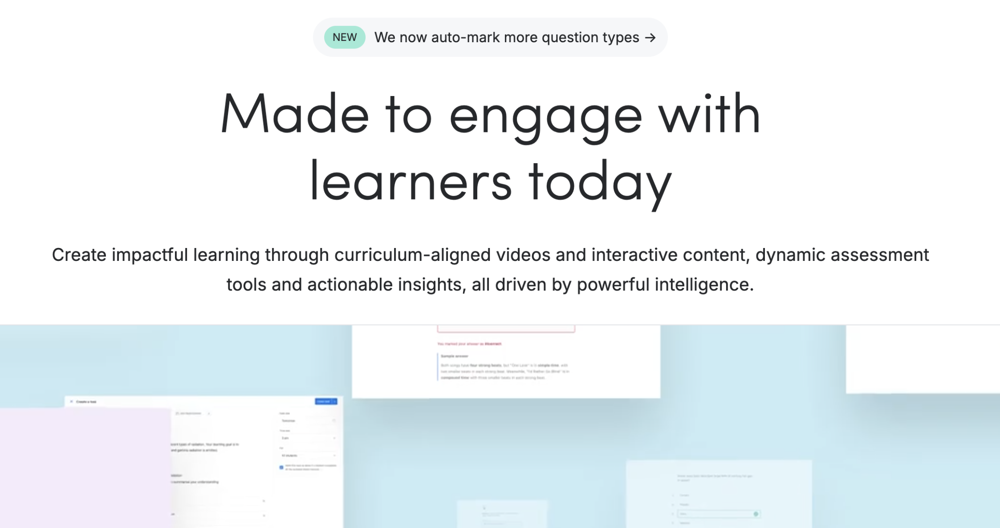
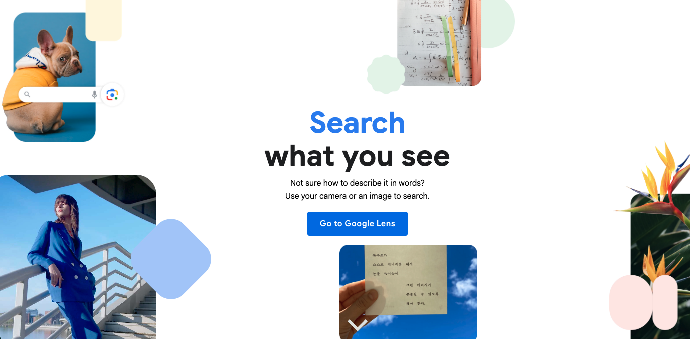

Week 2
New and Emerging Digital Technologies


What complicates this claim?
Several factors complicate this claim, starting with the use of the word "learning". Selwyn (2021) defines learning as an ongoing process of acquiring skills, an individual cognitive act that happens over time. In my opinion, the term "tailored learning" constrains students' cognitive processes. Software cannot tailor learning; it can only deliver tailored content or sequenced tasks.
Even giving Atomi the benefit of the doubt that this was just bad wording, and the intention is more towards "tailored content" to differentiate for all students, a deeper problem emerges. AI works on quantifiable data points and many reasons students need differentiation in the classroom are socioemotional and cannot be measured by software (Santrock, 2023; Selwyn, 2022).
Giving the benefit of the doubt once more and assuming that what is actually meant is that curriculum material is provided for several levels of ability, then ethical red flags arise. To be able to know where individual students are up to and what their skill levels are, potential facial recognition and heavy user tracking are needed and suspicious (Williamson, 2024). Where does this data go? Who benefits from this data? As Selwyn (2022) warns, this type of profiling increases oppression of marginalised groups, which totally contradicts the original claim of providing a beneficial space for all students.

Screenshot: Google Lens homepage.
One state-of-the-actual constraint
Atomi does use AI-driven recommendations once the students have completed a quiz and uses a scaffolded approach when displaying the content. Ignoring the issues mentioned earlier, I am returning to the original concern I raised in my introduction to this portfolio: my students' behaviour when working with a computer. No matter how well-adapted or engaging the content might be, the convenience of Google Lens, which answers their questions, wins. The state-of-the-actual I see in the classroom is the AI-dependent behaviour students show, where no learning is happening (Fu, 2026). This claim check shows an example of AI and online learning as part of the hype cycle, trying to sell software that promises hyper personalisation and unique learning, which proves false in reality.